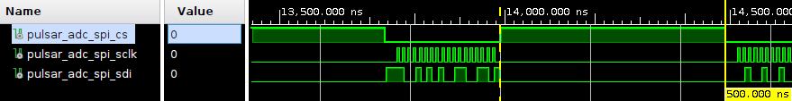

SPI Engine Tutorial - PulSAR-ADC
The goal of this tutorial is to present the process of adding SPI Engine support for an ADI precision converter or family of converters using a few simple steps. The target carrier is the Digilent Cora Z7S board using a PMOD connector.
Evaluating the target device
The aim of this project is to provide support for a family of ADCs which come in the form of pulsar-adc-pmods. They all share the same interface and the same PCB, the differences being found in their performance. The table below offers a comparison between the timing parameters of the SPI interface for these devices. Using this table we can see how much they have in common and where the key differences are. All the values are for 3.3V VIO since the Cora Z7S is only 3.3V capable.
Device |
Re solution |
KSPS |
T_ SPI_SCLK min [ns] |
T_CONV max [ns] |
T_CYC min [ns] |
T_ACQ min [ns] |
|---|---|---|---|---|---|---|
AD7942 |
14 |
250 |
18 |
2200 |
4000 |
1800 |
AD7946 |
14 |
500 |
15 |
1600 |
2000 |
400 |
AD7988-1 |
16 |
100 |
12 |
9500 |
1000 |
500 |
AD7685 |
16 |
250 |
15 |
2200 |
4000 |
1800 |
AD7687 |
16 |
250 |
10 |
2200 |
4000 |
1800 |
AD7691 |
16 |
250 |
15 |
2200 |
4000 |
1800 |
AD7686 |
16 |
500 |
15 |
1600 |
2000 |
400 |
AD7693 |
16 |
500 |
15 |
1600 |
2000 |
400 |
AD7 988-5(B) |
16 |
500 |
12 |
1600 |
2000 |
400 |
AD7 988-5(C) |
16 |
500 |
12 |
1200 |
2000 |
800 |
AD7980 |
16 |
1000 |
10 |
710 |
1000 |
290 |
AD7983 |
16 |
1333 |
12 |
500 |
750 |
250 |
AD7690 |
18 |
400 |
15 |
2100 |
2500 |
400 |
AD7982 |
18 |
1000 |
12 |
710 |
1000 |
290 |
AD7984 |
18 |
1333 |
12 |
500 |
750 |
250 |
The device with the most demanding timing specifications is the AD7984. It requires the highest amount of data (18 bit) to be read in the least amount of time (T_ACQ 250ns). The other devices will work with the same HDL by just using different “downgraded” configurations.
SPI Engine hierarchy instantiation
The SPI Engine can be implemented in two ways, either by placing and connecting each IP individually or by using the function provided by the library/spi_engine/scripts/spi_engine.tcl script.
Using the script ensures that the correct connections are being made and that the IP cores will receive the correct parameter configuration since certain parameters need to be set to the same value. The function takes the following arguments:
proc spi_engine_create {{name "spi_engine"} {data_width 32} {async_spi_clk 1} {num_cs 1} {num_sdi 1} {num_sdo 1} {sdi_delay 0} {echo_sclk 0} {cmd_mem_addr_width 4} {data_mem_addr_width 4} {sdi_fifo_addr_width 5} {sdo_fifo_addr_width 5} {sync_fifo_addr_width 4} {cmd_fifo_addr_width 4}}
data_width will set the width of the data bus / data line used by the SPI engine to connect to the DMA and which serves the purpose of sending ADC sample data to the DDR memory. The data_width value will also set the maximum word length for the SPI transfer. Valid values are are 8/16/24/32. The DMA valid values are 16/32/64/128[…]. Since the Pulsar_ADC devices are all single SDI/SDO and some of them require 18bit transfers, this value will be rounded to 32bit.
async_spi_clk will chose the reference clock for the SPI Engine. Setting this parameter to 0 will configure the hierarchy to use the axi clock (100MHz) as the reference clock. Setting it to 1 will allow for an external reference clock (spi_clk). Because some devices need 80MHz SCLK, a 160MHz reference clock is required which implies an external reference.
num_cs selects the number of CS lines.
num_sdi selects the number of SDI lines.
sdi_delay The latch of the SDI line can be delayed with 1, 2 or 3 SPI core clock cycle. Needed for designs with high SCLK rate (>50MHz).
Configuration tcl code and result below:
source $ad_hdl_dir/library/spi_engine/scripts/spi_engine.tcl
set data_width 32
set async_spi_clk 1
set num_cs 1
set num_sdi 1
set sdi_delay 1
set hier_spi_engine spi_pulsar_adc
spi_engine_create $hier_spi_engine $data_width $async_spi_clk $num_cs $num_sdi $sdi_delay
SPI Engine reference clock
There are 3 categories of devices depending on the SPI interface clock (SCLK): 80 MHz, 50MHz (one device) and 40MHz. SCLK will be derived from the spi_clk reference signal using an internal prescaler with this formula:
Therefore a 160MHz reference clock will be needed for the 40 and 80MHz variants and 100MHz for the 50MHz SCLK. The axi_clkgen IP core will be used to obtain the 160MHz which will be the default value to ensure that the design bitstream meets timing. This IP can also be configured from software to output 100MHz.
ad_ip_instance axi_clkgen spi_clkgen
ad_ip_parameter spi_clkgen CONFIG.CLK0_DIV 5
ad_ip_parameter spi_clkgen CONFIG.VCO_DIV 1
ad_ip_parameter spi_clkgen CONFIG.VCO_MUL 8
Clock source for IP and spi_clk connection
ad_connect $sys_cpu_clk spi_clkgen/clk
ad_connect spi_clk spi_clkgen/clk_0
ad_connect spi_clk spi_pulsar_adc/spi_clk
ad_connect spi_clk axi_pulsar_adc_dma/s_axis_aclk
AD7984 Timing diagram
The operation mode that will be implemented using the SPI Engine in offload mode is the \(\overline{CS}\) Mode, 3-Wire with Busy Indicator Serial Interface Timing (SDI High), as shown in AD7984, page 18, figure 30.
Key timing characteristics:
18 bit transfers
750 ns T_CYC
500 ns T_CONV
250 ns T_ACQ
12 ns T_SCLK @ >3V VIO (Cora PMOD is 3V3)
Sample rate control
The T_CYC parameter is the what sets the maximum sample rate (1/750 => 1333 KSPS). To achieve precise control over the sample rate we will use a PWM generator (AXI PWM GEN) using the spi_clk as reference. The spi_clock is used to avoid clock domain crossing mechanisms which will introduce latency, decreasing the overall performance of the system.
ad_ip_instance axi_pwm_gen pulsar_adc_trigger_gen
ad_ip_parameter pulsar_adc_trigger_gen CONFIG.PULSE_0_PERIOD 120
ad_ip_parameter pulsar_adc_trigger_gen CONFIG.PULSE_0_WIDTH 1
ad_connect spi_clk pulsar_adc_trigger_gen/ext_clk
ad_connect $sys_cpu_clk pulsar_adc_trigger_gen/s_axi_aclk
ad_connect sys_cpu_resetn pulsar_adc_trigger_gen/s_axi_aresetn
ad_connect pulsar_adc_trigger_gen/pwm_0 $hier_spi_engine/offload/trigger

Since the AXI PWM IP core is connected to the system with AXI4 Lite, the software will be able to change the frequency of its output at any time. The resolution of the PWM period is the reference clock period (spi_clk) providing a wide range of options.
The PWM output will be used as a trigger signal for the offload IP core.
The CS signal will be used to drive CNV and will have the same frequency as the PWM-trigger signal.
DMA setup
DMA destination bus (connection to Zynq – DDR memory) shall always be 64 bit wide AXI4 MM and source bus shall be data_width * num_sdi = 32 bit, AXI4 Stream.
ad_ip_instance axi_dmac axi_pulsar_adc_dma
ad_ip_parameter axi_pulsar_adc_dma CONFIG.DMA_TYPE_SRC 1
ad_ip_parameter axi_pulsar_adc_dma CONFIG.DMA_TYPE_DEST 0
ad_ip_parameter axi_pulsar_adc_dma CONFIG.CYCLIC 0
ad_ip_parameter axi_pulsar_adc_dma CONFIG.SYNC_TRANSFER_START 0
ad_ip_parameter axi_pulsar_adc_dma CONFIG.AXI_SLICE_SRC 0
ad_ip_parameter axi_pulsar_adc_dma CONFIG.AXI_SLICE_DEST 1
ad_ip_parameter axi_pulsar_adc_dma CONFIG.DMA_2D_TRANSFER 0
ad_ip_parameter axi_pulsar_adc_dma CONFIG.DMA_DATA_WIDTH_SRC $data_width //32
ad_ip_parameter axi_pulsar_adc_dma CONFIG.DMA_DATA_WIDTH_DEST 64
The system clock is used as destination clock and the spi_clk is used as source clock
ad_connect spi_clk axi_pulsar_adc_dma/s_axis_aclk
ad_mem_hp1_interconnect $sys_cpu_clk axi_pulsar_adc_dma/m_dest_axi
System Top
This is a layer on top of the system_wrapper generated by Vivado used to instantiate IO buffers, I/ODDRs or to create some custom connections which would be harder to do in the block design. It also allows for more consistency across projects. In this particular case we use it to place an IO buffer for the ADC power down signal (pulsar_adc_spi_pd).
System Constraints
The system_constr.xdc file inside the carrier folder (/coraz7s/system_constr.xdc) is used for defining the physical FPGA pins used by this particular project (in this case the AD7984 ADC), excluding the “common” design for the carrier board which has a separate constraints file (i.e. DDR pins, Ethernet, UART etc). It also contains some timing constraints specific to the SPI Engine.
create_generated_clock -name spi_clk -source [get_pins -filter name=~*CLKIN1 -of [get_cells -hier -filter name=~*spi_clkgen*i_mmcm]] -master_clock clk_fpga_0 [get_pins -filter name=~*CLKOUT0 -of [get_cells -hier -filter name=~*spi_clkgen*i_mmcm]]
# relax the SDO path to help closing timing at high frequencies
set_multicycle_path -setup 8 -to [get_cells -hierarchical -filter {NAME=~*/data_sdo_shift_reg[*]}] -from [get_clocks spi_clk]
set_multicycle_path -hold 7 -to [get_cells -hierarchical -filter {NAME=~*/data_sdo_shift_reg[*]}] -from [get_clocks spi_clk]
set_multicycle_path -setup 8 -to [get_cells -hierarchical -filter {NAME=~*/execution/inst/left_aligned_reg*}] -from [get_clocks spi_clk]
set_multicycle_path -hold 7 -to [get_cells -hierarchical -filter {NAME=~*/execution/inst/left_aligned_reg*}] -from [get_clocks spi_clk]
Testbench
To check the overall performance of the design and also to expose any major bugs, the system can be tested using a testbench from ADI Testbenches repository.
The testbench framework is designed to use the same bd.tcl as the actual project pulsar_adc_pmdz/system_bd.tcl#L50
The setup assumes the testbenches repo is cloned inside the hdl repo. To build
the testbench project simply run make cfg1 from the
hdl/testbenches/pulsar_adc_pmdz/ folder. Besides exposing possible bugs,
using the testbench will provide the user with an early way of evaluating the
timing of the design. The testbench can also be a very useful tool for IP
development.
Evaluating the result
Due to the limits of the SPI Engine cores, T_CYC needs to be increased slightly over the minimum value, to ensure that the design meets the T_CONV minimum. This will slightly lower the maximum sample rate of the design from 1.333 MSPS to 1.322 MSPS.
{kind=link}
Holding CS high for 500ns ensures that we always meet T_CONV minimum.
{kind=link}
The 250ns minimum T_ACQ is also met with a slightly higher value of 256.25ns.

Overall the project appears to be functional and ready for the next step in development, using software.
Software section
Important
This section is still under development.